简介：
本文整理自Apple文档《Coding Guidelines for Cocoa》。这份文档原意是给Cocoa框架、插件及公共API开发者提供一些编码指导，实质上相当于Apple内部的编码规范。在多人协作时，一份统一的代码规范大大减少开发者之间的沟通成本，极力推荐。
目录：
一、代码命名基础
二、方法
三、函数
四、Property及其他
五、缩写
一、代码命名基础
1.通用原则
1.1 清晰
尽量清晰又简洁，无法两全时清晰更重要
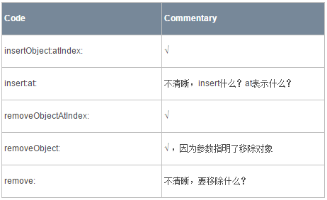
通常不应缩写名称，即使方法名很长也应完整拼写
你可能认为某个缩写众所周知，但其实未必，特别是你周围的开发者语言文化背景不同时
有一些历史悠久的缩写还是可以使用的，详见第五章
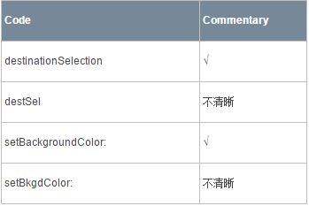
API命名避免歧义，例如一个方法名有多种理解
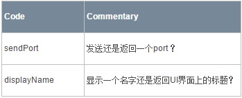
1.2 一致
尽力保持Cocoa编程接口命名一致
如果有疑惑，请浏览当前头文件或者参考文档
当某个类的方法使用了多态时，一致性尤其重要
不同类里，功能相同的方法命名也应相同
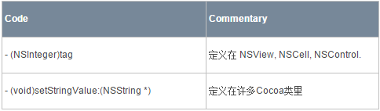
1.3 避免自引用（self Reference）
命名不应自引用
这里的自引用指的是在词尾引用自身
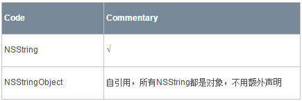
Mask与Notification忽略此规则
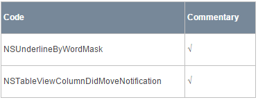
2.前缀
前缀是编程接口命名的重要部分，它们区分了软件的不同功能区域：
前缀可以防止第三方开发者与Apple的命名冲突
同样可以防止Apple内部的命名冲突
前缀有指定格式
它由二到三个大写字母组成，不使用下划线和子前缀
命名类、协议、函数、常量和typedef结构体时使用前缀
方法名不使用前缀（因为它存在于特定类的命名空间中）
结构体字段不使用前缀
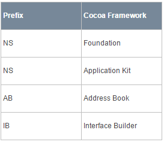
3.书写约定
在命名API元素时， 使用驼峰命名法（如runTheWordsTogether），并注意以下书写约定：
方法名
小写第一个字母，大写之后所有单词的首字母，不使用前缀
如果方法名以一个众所周知的大写缩略词开始，该规则不适用
如TIFFRepresentation (NSImage)
fileExistsAtPath:isDirectory:
函数及常量名
使用与其关联类相同的前缀，并大写首字母
NSRunAlertPanel NSCellDisabled
标点符号
由多个单词组成的名称，别使用标点符号作为名称的一部分
分隔符（下划线、破折号等）也不能使用
避免使用下划线作为私有方法的前缀，Apple保留这一方式的使用
强行使用可能会导致命名冲突，即Apple已有的方法被覆盖，这会导致灾难性后果
实例变量使用下划线作为前缀还是允许的
4.class与protocol命名
class
class的名称应该包含一个名词，用以表明这个类是什么（或者做了什么），并拥有合适的前缀
如NSString、NSDate、NSScanner、UIApplication、UIButton
不关联class的protocol
大多数protocol聚集了一堆相关方法，并不关联class
这种protocol使用ing形式以和class区分开来
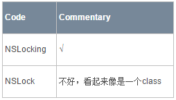
关联class的protocol
一些protoco聚集了一堆无关方法，并试图与某个class关联在一起，由这个class来主导
这种protocol与class同名
如NSObject protocol
5.头文件
头文件的命名极其重要，因为它可以指出头文件包含的内容：
声明一个孤立的class或protocol
将声明放入单独的文件
使头文件名与声明的class/protocol相同
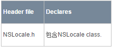
声明关联的class或protocol
将关联的声明（class/category/protocol）放入同一个头文件
头文件名与主要的class/category/protocol相同
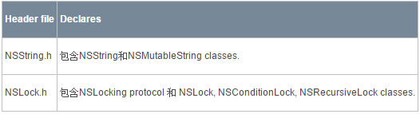
Framework头文件
每个framework都应该有一个同名头文件
Include了框架内其他所有头文件
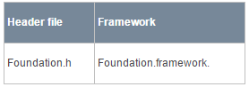
添加API到另一个framework
如果要在一个framework中为另一个framework的class catetgory添加方法，加上单词“Additions”
如Application Kit的NSBundleAdditions.h 文件
关联的函数、数据类型
如果你有一组关联的函数、常量、结构体或其他数据类型，将它们放到一个名字合适的头文件中
如Application Kit的NSGraphics.h
二、方法
1.通用原则
以小写字母开始，之后单词的首字母大写
以众所周知的缩写开始可以大写，如TIFF、PDF
私有方法可以加前缀
如果方法代表对象接收的动作，以动词开始
不要使用 do 或 does 作为名字的一部分，因为助动词在这里很少有实际意义
同样的，也别在动词之前使用副词和形容词
- (void)invokeWithTarget:(id)target; - (void)selectTabViewItem:(NSTabViewItem *)tabViewItem
如果方法返回接收者的属性，以 接收者 + 接收的属性 命名
除非间接返回多个值，否则不要使用 get 单词（为了与accessor methods区分）
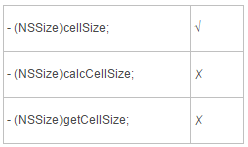
在所有参数之前使用关键字
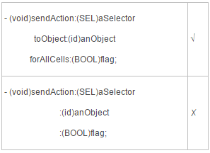
确保参数之前的关键字充分描述了参数
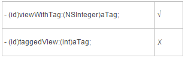
创建自定义 init 方法时，记得指明关联的元素
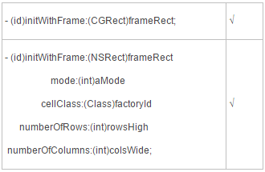
不要使用 and 来连接作为接收者属性的关键字
虽然下面的例子使用 and 看似不错，但是一旦参数非常多时就容易出现问题
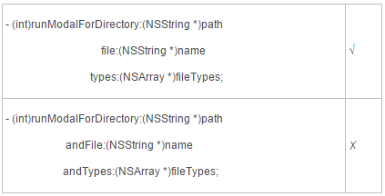
除非方法描述了两个独立的操作，才使用 and 来连接它们
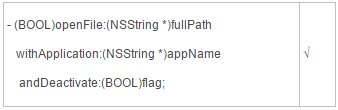
2.getter和setter方法（Accessor Methods）
如果property表示为名词，格式如下
- (type)noun;
- (void)setNoun:(type)aNoun;
- (BOOL)isAdjective;
- (NSString *)title; - (void)setTitle:(NSString *)aTitle;
如果property表示为形容词，格式如下
- (BOOL)isAdjective;
- (void)setAdjective:(BOOL)flag;
- (BOOL)isEditable; - (void)setEditable:(BOOL)flag;
如果property表示为动词，格式如下（动词用一般现在时）
- (BOOL)verbObject;
- (void)setVerbObject:(BOOL)flag;
- (BOOL)showsAlpha; - (void)setShowsAlpha:(BOOL)flag;
不要把动词的过去分词形式当作形容词使用
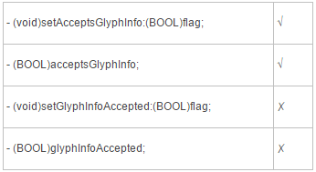
你可能使用情态动词（can、should、will等）来增加可读性，不过不要使用 do或 does
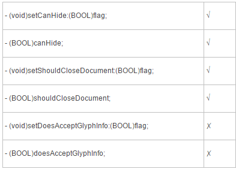
只有方法需要间接返回多个值的情况下才使用 get
像这种接收多个参数的方法应该能够传入nil，因为调用者未必对每个参数都感兴趣
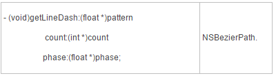
3.Delegate方法
以发送消息的对象开始
省略了前缀的类名和首字母小写
- (BOOL)tableView:(NSTableView *)tableView shouldSelectRow:(int)row; - (BOOL)application:(NSApplication *)sender openFile:(NSString *)filename;
以发送消息的对象开始的规则不适用下列两种情况
只有一个sender参数的方法
- (BOOL)applicationOpenUntitledFile:(NSApplication *)sender;
响应notification的方法（方法的唯一参数就是notification）
- (void)windowDidChangeScreen:(NSNotification *)notification;
使用单词 did 和 will 来通知delegate
did 表示某些事已发生
will 表示某些事将要发生
- (void)browserDidScroll:(NSBrowser *)sender; - (NSUndoManager *)windowWillReturnUndoManager:(NSWindow *)window;
询问delegate是否可以执行某个行为时可以使用 did 或 will，不过 should 更完美
- (BOOL)windowShouldClose:(id)sender;
4.集合方法
为了管理集合中的元素，集合应该有这几个方法
- (void)addElement:(elementType)anObj;
- (void)removeElement:(elementType)anObj;
- (NSArray *)elements;
- (void)addLayoutManager:(NSLayoutManager *)obj; - (void)removeLayoutManager:(NSLayoutManager *)obj; - (NSArray *)layoutManagers;
如果集合是无序的，返回一个NSSet比NSarray更好
如果需要在集合中的特定位置插入元素，使用类似下面的方法
- (void)insertLayoutManager:(NSLayoutManager *)obj atIndex:(int)index; - (void)removeLayoutManagerAtIndex:(int)index;
其他集合方法示例
- (void)addChildWindow:(NSWindow *)childWin ordered:(NSWindowOrderingMode)place; - (void)removeChildWindow:(NSWindow *)childWin; - (NSArray *)childWindows; - (NSWindow *)parentWindow; - (void)setParentWindow:(NSWindow *)window;
5.方法参数
参数名以小写字母开始，之后的单词首字母大写
如：removeObject:(id)anObject
别使用 ”pointer” 或 ”ptr” 命名
参数类型里就已表明它是否是一个指针
避免只有一到二个字母的参数名
避免只有几个字母的缩写
...action:(SEL)aSelector ...alignment:(int)mode ...atIndex:(int)index ...content:(NSRect)aRect ...doubleValue:(double)aDouble ...floatValue:(float)aFloat ...font:(NSFont *)fontObj ...frame:(NSRect)frameRect ...intValue:(int)anInt ...keyEquivalent:(NSString *)charCode ...length:(int)numBytes ...point:(NSPoint)aPoint ...stringValue:(NSString *)aString ...tag:(int)anInt ...target:(id)anObject ...title:(NSString *)aString
6.私有方法
不要使用下划线作为私有方法的前缀，Apple保留这一使用方式
因为若是你的私有方法名已被Apple使用，覆盖它将会产生极难追踪的BUG
如果继承自大型Cocoa框架（如UIView），请确保子类的私有方法名与父类不一样
可以为私有方法加一个前缀，如公司名或项目名：XX_
例如你的项目叫做Byte Flogger，那么前缀可能是：BF_addObject
总之，为子类的私有方法添加前缀是为了不覆盖其父类的私有方法
三、函数
函数的命名类似方法，但有两点要注意
你使用的类和常量拥有相同的前缀
前缀后的首字母大写
许多函数名以描述其作用的动词开始
NSHighlightRect NSDeallocateObject
查询属性的函数有进一步的命名规则
如果函数返回首个参数的属性，省略动词
unsigned int NSEventMaskFromType(NSEventType type) float NSHeight(NSRect aRect)
如果通过reference返回了值，使用 “Get”
const char *NSGetSizeAndAlignment(const char *typePtr, unsigned int *sizep, unsigned int *alignp)
如果返回的是boolean值，应该灵活使用动词
BOOL NSDecimalIsNotANumber(const NSDecimal *decimal)
四、Property及其他
1.Property与实例变量
1.1 Property
Property命名规则与第二章accessor methods一样（因为两者紧密联系）
如果property表示为一个名词或动词，格式如下
@property (…) 类型 名词/动词 ;
@property (strong) NSString *title; @property (assign) BOOL showsAlpha;
如果property表示为一个形容词
可省略 ”is” 前缀
但要指定getter方法的惯用名称
@property (assign, getter=isEditable) BOOL editable;
1.2 实例变量
通常不应该直接访问实例变量
init、dealloc、accessor methods等方法内部例外
实例变量以下划线 “_” 开始
确保实例变量描述了所存储的属性
@implementation MyClass {
BOOL _showsTitle;
}如果想要修改property的实例变量名，使用 @synthesize语句
@implementation MyClass @synthesize showsTitle=_showsTitle;
为一个class添加实例变量时，有几点需要注意：
避免声明公有实例变量
开发者关注的应该是对象接口，而不是其数据细节
你可以通过使用property来避免声明实例变量
如果需要声明实例变量，指定关键字@private 或 @protected
如果你希望子类可以直接访问某个实例变量，使用 @protected 关键字
如果一个实例变量是某个类可访问的属性，确保写了accessor methods
如果有可能，还是使用property
2.常量
2.1 枚举常量
使用枚举来关联一组integer常量
枚举常量和typedef遵循函数的命名规范，下面的例子是 NSMatrix.h
typedef enum _NSMatrixMode {
NSRadioModeMatrix = 0,
NSHighlightModeMatrix = 1,
NSListModeMatrix = 2,
NSTrackModeMatrix = 3
} NSMatrixMode;你可以为bit masks之类的东西创建一个匿名枚举
enum {
NSBorderlessWindowMask = 0,
NSTitledWindowMask = 1 << 0,
NSClosableWindowMask = 1 << 1,
NSMiniaturizableWindowMask = 1 << 2,
NSResizableWindowMask = 1 << 3
};
2.2 使用const关键字的常量
使用const关键字来创建一个float常量
你可以使用const关键字来创建一个与其他常量不相关的integer常量，否则，使用枚举
使用const关键字的常量也遵循函数的命名规则
const float NSLightGray;
2.3 其他常量类型
通常不应使用 #define 预编译指令来创建常量
integer常量，使用枚举
float常量，使用 const 修饰符
对 #define 预编译指令，大写所有字母
比如 DEBUG 判断
#ifdef DEBUG
注意宏命令的字首和字尾都有双下划线
__MACH__
定义NSString常量来作为Notification和Key值
这样做可以有效防止拼写错误
APPKIT_EXTERN NSString *NSPrintCopies;
3.Notifications与Exceptions
3.1 Notifications
Notification的格式
[Name of associated class] + [Did | Will] + [UniquePartOfName] + Notification
NSApplicationDidBecomeActiveNotification NSWindowDidMiniaturizeNotification NSTextViewDidChangeSelectionNotification NSColorPanelColorDidChangeNotification
3.2 Exceptions
Exception的格式
[Prefix] + [UniquePartOfName] + Exception
NSColorListIOException NSColorListNotEditableException NSDraggingException NSFontUnavailableException NSIllegalSelectorException
五、缩写
设计编程接口时通常不应使用缩写，但下列已被广泛使用的缩写名称除外
标准C库中的缩写名，如：alloc、init
参数名可自由使用缩写，如：imageRep、col、obj、otherWin
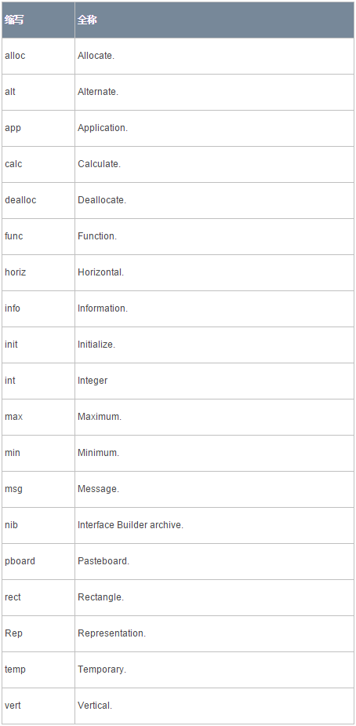
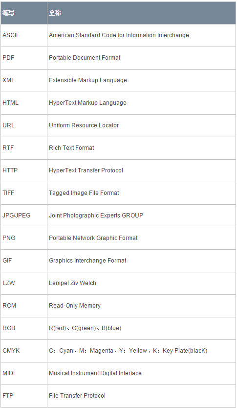